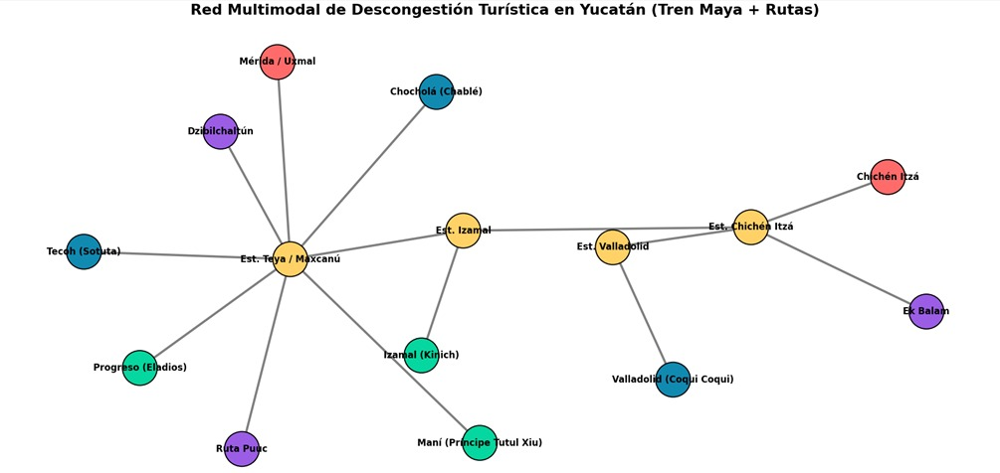

Corredor Arqueológico Alternativo
Aventura Ancestral
Explora Ek Balam, la Ruta Puuc (Kabah y Mayapán) y Dzibilchaltún con guías comunitarios y sin la saturación de Chichén Itzá.
Estaciones: Mérida Teya • Izamal • Valladolid
Conectamos las estaciones del Tren Maya con rutas arqueológicas, gastronómicas y de bienestar que evitan la saturación y llevan derrama directa a las comunidades.
6,400
Viajeros redistribuidos/día
-39.1%
Ahorro operativo diario
3 Rutas
Conectadas al Tren Maya


Cada ruta está diseñada a partir de estaciones estratégicas del Tren Maya para reducir tiempos de traslado y evitar puntos saturados.
Explora Ek Balam, la Ruta Puuc (Kabah y Mayapán) y Dzibilchaltún con guías comunitarios y sin la saturación de Chichén Itzá.
Estaciones: Mérida Teya • Izamal • Valladolid
Cocina tradicional de horno de tierra, mercados locales y talleres culinarios en Izamal, Maní, Ticul y la costa de Progreso.
Estaciones: Estación Izamal • Mérida Teya
Cenotes tranquilos, haciendas históricas y descanso real para viajeros remotos en Chocholá, Tecoh y Valladolid.
Estaciones: Maxcanú • Mérida Teya • Valladolid
Simula el comportamiento de afluencia por temporada para activar alertas de desvío hacia destinos secundarios antes de rebasar el umbral crítico de 210,000 pernoctas.
*Nota metodológica: Indicadores calibrados con series históricas de visitantes INAH Yucatán y ocupación hotelera SEFOTUR, integrados al modelo de redistribución de 6,400 turistas/día sobre 9,200 plazas receptivas.
Visualización geográfica de los Tramos 3 y 4 junto con el grafo multimodal de redistribución hacia nodos de baja saturación.

Integra el eje troncal (Maxcanú, Mérida Teya, Izamal, Chichén Itzá, Valladolid) con los 3 corredores temáticos de descongestión.

● Nodos rojos: Zonas de alta presión (Chichén Itzá, Mérida/Uxmal).
● Nodos amarillos: Estaciones articuladoras del Tren Maya.
● Nodos morados, verdes y azules: Destinos alternos con capacidad disponible.